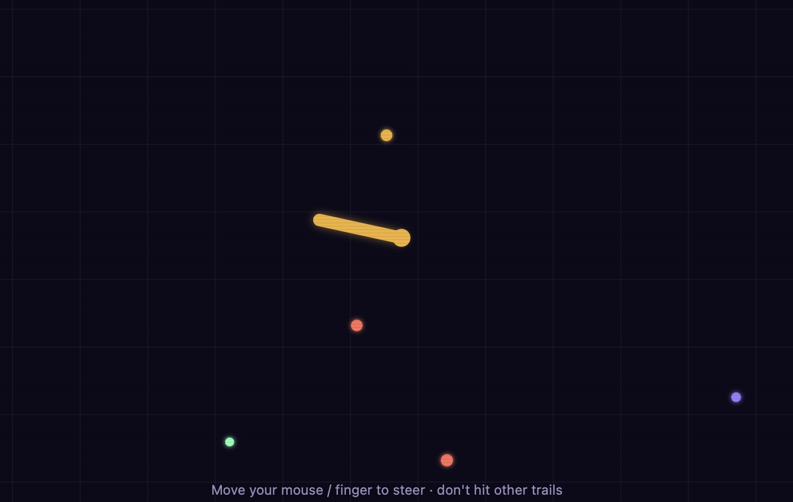
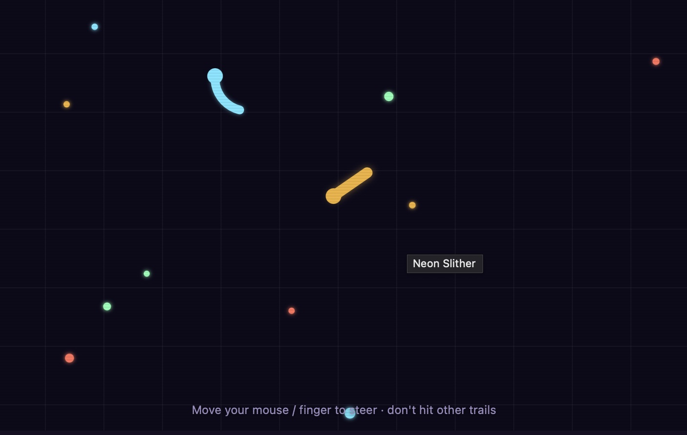
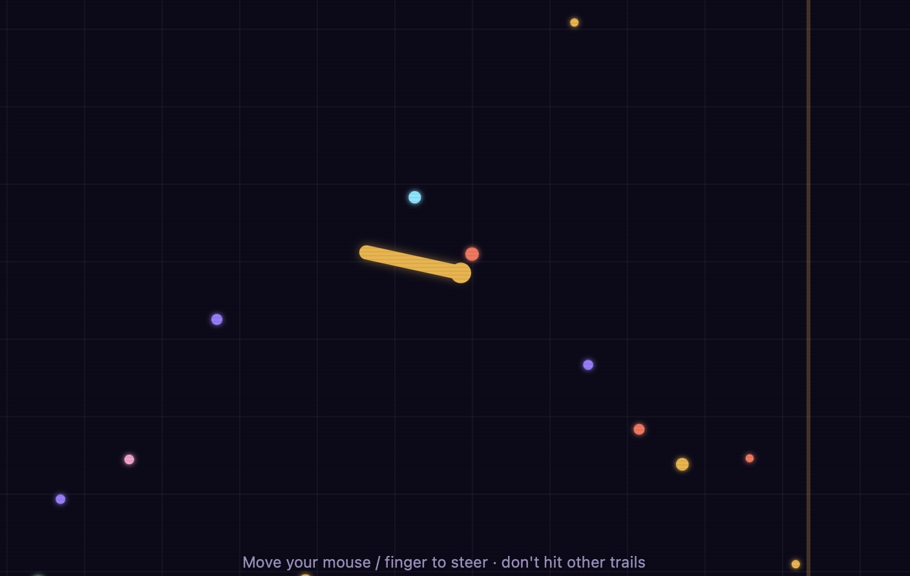

Free · No download · Play in browser
Steer with your mouse, eat glowing orbs to grow, and cut off rivals without crossing anyone's trail — including your own.
How to play Neon Slither
Move your mouse (or drag your finger on mobile) to steer — your snake always turns toward the cursor. Glowing orbs are scattered across the arena; glide over them to grow longer. The only thing that ends a run is your own head touching a trail, whether it's yours or a rival's, so the real skill is steering tight curves without boxing yourself in. Click and hold (or press and hold on touch) to boost for a short burst of speed, which trims a little length off your tail as the cost.
Neon Slither screenshots



Controls
| Action | Desktop | Mobile |
|---|---|---|
| Steer | Move mouse | Drag finger on screen |
| Boost | Click and hold | Touch and hold |
| Start / Retry | Click the on-screen button | Tap the on-screen button |
Tips & strategies
- Circle rivals, don't chase them. AI snakes often cross their own path when cornered — loop around a rival rather than following directly behind it, and let it box itself in.
- Save boost for escapes, not exploring. Since boosting shrinks your length, it's most valuable for slipping out of a tight spot, not for casually covering ground.
- Watch the edges. The arena wraps around — your snake reappears on the opposite side when it crosses a border, which can be used to dodge a rival at the last second.
- Longer isn't always safer. A long snake has more trail on the map for you to accidentally cross yourself — keep your curves wide when you're big.
- Orb clusters are worth the detour. Defeated rivals scatter a cluster of orbs where they died — a quick pass through can grow you fast.
Game features at a glance
- Mouse or touch steering, no keyboard required
- Six AI-controlled rivals that respawn after being defeated
- Boost mechanic with a real risk/reward trade-off
- Wrap-around arena — no dead-end walls
- Live length and rank tracker while you play
- Runs entirely in-browser, no plugins or installs
About this game
Neon Slither is an original PlayItNow build, made in-house for instant browser play — no plugins, no downloads, nothing to install. If you enjoy Slither.io or other free online snake games, Neon Slither runs on the same "grow and avoid trails" formula that's kept players coming back for years, with a neon-arcade look built to match the rest of the site.
Neon Slither — FAQ
Is there a multiplayer or online mode?
Not yet — right now Neon Slither is single-player against AI rivals. A real multiplayer mode is on the roadmap.
Is Neon Slither like Slither.io or other multiplayer snake games?
It's built on the same grow-and-avoid-trails formula popularized by Slither.io and other multiplayer snake games, but Neon Slither is single-player — instead of real players, you're growing against AI-controlled rival snakes. If you like snake .io games or grow-bigger arena games in general, the core loop will feel familiar.
How do I boost?
Click and hold on desktop, or touch and hold on mobile. Boosting costs a small amount of length, so use it when you need to escape a close call rather than all the time.
Why isn't the game loading?
- Check your internet connection and refresh the page.
- Try disabling any ad blocker or browser extension that blocks embedded content, then reload.
- Try a different browser (Chrome or Firefox tend to be most reliable for canvas-based games).
Does it work on mobile?
Yes — steer by dragging your finger anywhere on the game screen, and touch-and-hold to boost.
Looking for something else? Browse all games on PlayItNow.